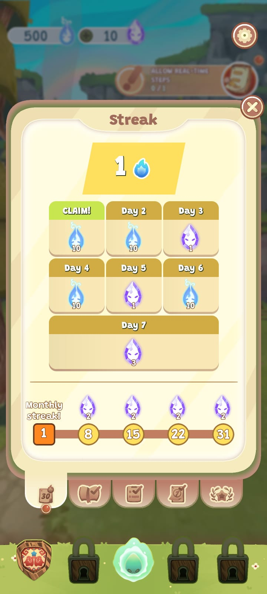
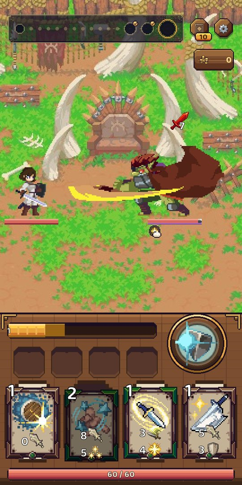
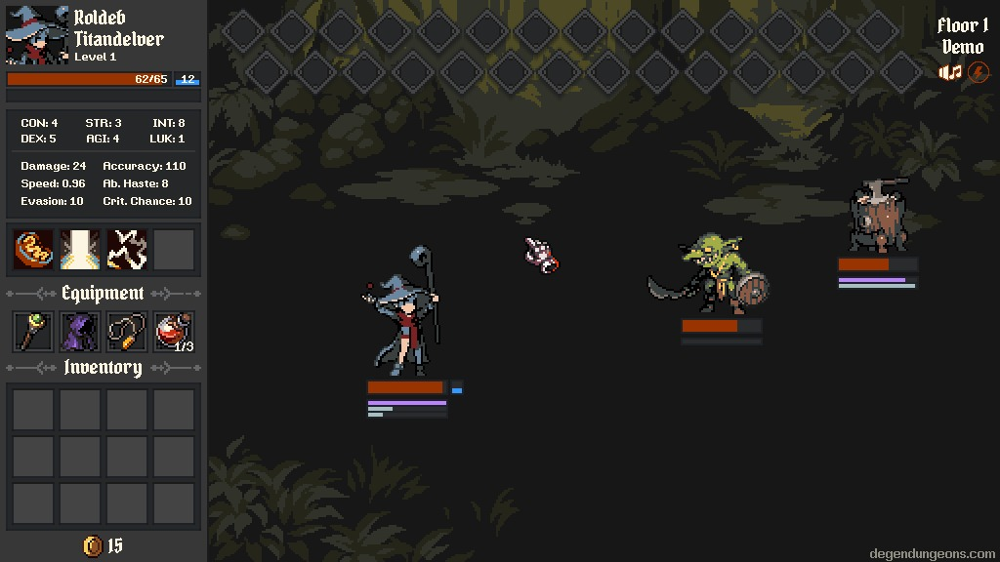

I build games. And the AI team that ships them.
I'm a gameplay programmer in Barcelona. I've shipped games at two studios and built AI systems in production.
My own game, Dungeon Heroes, is a real-time roguelike deckbuilder for mobile, designed around a free-to-play model.
To build it, I set up a studio made of AI agents: a fleet of specialists, a manager that assigns their work, and a loop that turns my corrections into their rules.


Multi-agent system · orchestration · MCP · RAG · evals · 2026
A multi-agent studio builds my game. I set the direction and judge the work.
Dungeon Heroes is a big project for one person, so I built the studio it needed out of AI agents.
Orchestration
- Multi-agent orchestration · a manager agent plans the work and dispatches specialist sub-agents in parallel, each in its own git worktree.
- Tool use over MCP · MCP servers put the agents inside the live Unity editor and a pixel-art generator.
Knowledge
- Context engineering · a handbook per craft, read before every task. Each correction I give becomes a rule in it.
- RAG, hybrid retrieval · the agents search their own past work before starting a task, with keyword and vector search combined. Retrieval quality is scored against a gold set of known answers.
Control
- Human gates · I step in only where I add a decision: direction, sketch choice, verdict. Every other stop is automated.
- Evals and guardrails · a reviewer agent judges and scores every feature against its initial specs. Nothing merges before it compiles and passes tests and CI.
Specialist sub-agents · a worktree each
- Code
- UI
- Design
- Art
updated after
becomes a rule
Dungeon Heroes · my roguelike deckbuilder · Unity · 2026
Dungeon Heroes: real-time card combat, and the free-to-play systems around it.
A roguelike deckbuilder played in real time: a four-card hand that cycles like Clash Royale's, energy that fills as you fight, and casts that leave you vulnerable for a moment.
Enemies show their attacks before they land, so each moment asks whether to go on the offensive or defend. Each game feels different, with 197 spells and 54 relics to choose from.
It is in closed testing on Google Play, where testers have been playing it and giving feedback daily for weeks. A free-to-play game lives or dies on what systems surround the runs, so I designed that part as carefully as the combat. Four rules hold it together:
Cards, relics and heroes are collected and upgraded between runs. Ascensions give players a motive to upgrade their heroes. Time-gated content ensures the game remains exciting and novel for months.
All players have access to all content. Doubling run rewards or reviving once per run sit behind rewarded ads. Players can pay to unlock new characters and speed up progression, obtaining higher-level gear faster.
Daily and weekly tasks give players a reason to come back every day. An account track, a mastery track per hero and a long difficulty ladder give players long-term goals to work toward.
Run outcomes, card choices and more data points get recorded with each run. This data enables informed balance decisions based on player actions and statistics. It also measures pain points and retention drops, which point at the weak link in the game's design, reinforcing the framework.
Stepland · Somni Game Studios · Godot · Kotlin · 2025 · live on PlayStore and AppStore
The step sensor was Stepland's number one blocker. I learned Kotlin to fix it at the source.
Stepland is a free mobile game where the steps you walk grow a pet. On Android, its step counting depended on a second app that players had to install and set up first, and when that setup went wrong it failed silently: the game said it was connected and counted zero steps. It was costing us players in their first minutes.
I proposed reading the phone's own step sensor instead, and built the plug-in in Kotlin, Android's language, in a week. There is nothing extra to install, and it has been stable since. This was the last bottleneck holding the game back from entering production.
Other important contributions I made:
- The tutorial, as data · I designed it and drove its build with AI coding agents: 82 steps stored as data and not written into the code, so the team changes it without a programmer, and a player who closes the app halfway picks up where they left off.
- Streaks · the daily streak system end to end, from the saved data to the screen players see, still live as I built it.
before
after
- "connected", zero steps
- nothing to install
- built in a week
- stable since
Degen Crawler · Purple Pwny Studios · Gameplay programmer · Unity · 2023
I built an AI system that simulates thousands of Degen Crawler runs to help balance a live game.
In Degen Crawler players stake money on each run, so item balance decided whether the studio made or lost money on each run. Nobody can play thousands of dungeons by hand to check an item.
So I built an AI player: a program that plays the game the way a strong human would. It's a classic kind of AI called an expert system. Its strategy is written by hand, rule by rule, from how I play the game myself, so every move it makes can be read and explained.

- every move
- all options scored by rules I wrote; the best one is played
- the report
- how the item did, and the reason behind every move
Give it an item's new stats and it plays thousands of dungeons, then reports how the item did and why.
I also designed relics and enemy encounters for the game, and designed and built the prototype of a second studio project, which went unreleased.
Making a game? Building with AI agents? I'd like to hear about it.
Or write to dani.caballero.m@gmail.com.